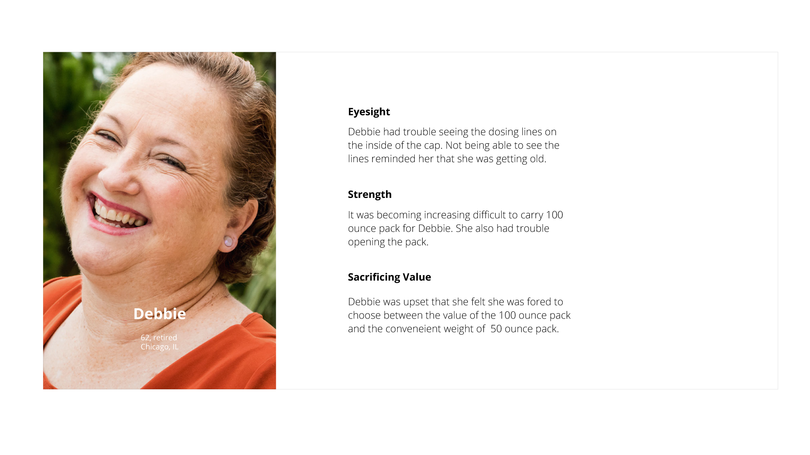

P&G User experience project
We innovate a detergent experience for old people to reduce their tensions when using Tide
Duration: 3 months, 2013 | Role: UX designer
Duration: 3 months, 2013 | Role: UX designer
01.Summary
This is a team-based user experience project incorporating with P&G. Our team's challenge is to innovate a better detergent experience of tide with a constraint that one part of the detergent need to be recycled. Building on insights we gained from 10-in home visits and one prototyping workshop our team learned some valuable insights.
Laundry users need a better experience, through less dripping, making it easier to get it all out, reducing the weight that had to be carried every time, and underlying all these tensions was the feeling that they were being penalized for not being able to life larger bottles. And certain challenges were most acute for older users. Our design direction sought to address the challenges of the baby boomers, those that will only grow over time.
Our team brainstormed, prototyped and tested a variety of ideas through workshops and home-visits and presented them to P&G. P&G said it was the second best idea they had ever seen after the one their research team innovated for years. They also rewarded us an intellectual property award. Due to extended confidential agreement, some details of the project may not be disclosed.
Our team brainstormed, prototyped and tested a variety of ideas through workshops and home-visits and presented them to P&G. P&G said it was the second best idea they had ever seen after the one their research team innovated for years. They also rewarded us an intellectual property award. Due to extended confidential agreement, some details of the project may not be disclosed.
02. Research: First In home visit
In order to discover the real tensions and needs, we conducted in-home visits and interviews with our customers. We observed their way to do a regular laundry with tide, asked them to think aloud to talk about the tensions they had with the product. And we also asked them to do a visual diary to explain what their ideal laundry experience would be to get the key "emotions" they are looking for.
03. Synthesis: 7 big themes
After our first in-home visits, we met as a team to tell the story of each user and share moments that stood out. In the end, we identified "Big 7" major themes from users' pain points.
04. Tensions on the journey: which context should we focus on
As the problem scope is so big, we need to focus on some particular context and target users to narrow down the problem area. Based on interviews and observations we created a tension map throughout the life-cycle of a laundry pack. Some of the greatest tension occurs at the beginning
of the process, where a heavy full bottle makes dosing and handling most difficult. Tension continues through out but again peaks as users adopt a variety of workaround to get everything out and as mess builds up.
My team wants to focus on an area that has big tensions. So we ignored the experience from store to home but focused more on the start-using and finish-using of the detergent
05. Narrow down: target baby boomers
Meet our persona Debbie and here are the main three challenges she is facing: 
06. Design Direction
- 1. minimize the weight carried throughout the life of the products life.
- 2. allow for easier dosing where users had control over the amount but provided with a clear guide
- 3. Build in the ease of getting it all out
- 4. Reduce or eliminate dripping
07. Brainstorm and prototype
Our brainstorm consists of two parts, first we brainstormed different solutions to different goals. Then we tried to combine several solutions together to make a whole product.

08. Testing
For the final round of in-home visits, we brought along prototypes to build on our insights and explore concepts. We also asked users to rate their current packs and a final pack made up of their favorite elements that were tested. We learned three main insights which reframed our design solutions.
The satisifactory survey shows a improvements addressming the issues about dosing, handling and getting it all out.
09. Refinement: iterating concepts based on testing insights
10.Final concept
Our final designs are built on the feedback and greatest moments of joy that we observed
from the testing of our concept prototypes. It also leverages familiar actions from existing
products and workaround practices users already employ. It incorporates the following
features:
- 1. Flexible Reload
- 2. Comfortable Handle
- 3. Squeeze Pump
- 4. Transparent Cup
- 5. Transparent window P&G gave us an intellectual property award.